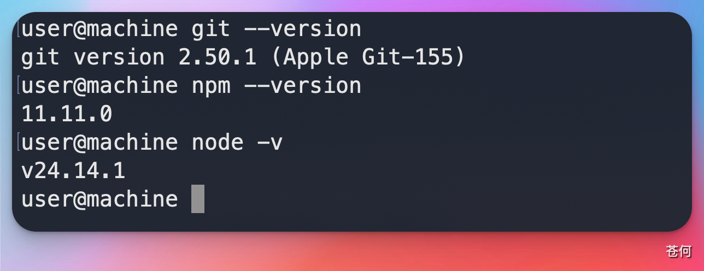

本节覆盖 Codex CLI 的安装与登录。桌面端、ChatGPT、Cloud 和 IDE 入口会在 入口地图 中分别展开。
安装前检查#
安装前先根据自己的系统和安装方式检查环境：
| 项目 | 说明 |
|---|---|
| 操作系统 | 支持 macOS、Linux 和 Windows；Windows 可以原生运行，也可以按需使用 WSL2 |
| Git | 推荐安装，方便 Codex 读取仓库、检查差异和创建回退点 |
| Node.js 与 npm | 只有选择 npm 安装方式时才需要 |
通用检查：
git --version如果准备通过 npm 安装，再检查：
node -v
npm -v
安装 CLI#
官方目前提供独立安装脚本、npm、Homebrew 和 Windows 安装入口。macOS 或 Linux 可以直接使用独立安装脚本：
curl -fsSL https://chatgpt.com/codex/install.sh | sh以后再次运行同一条命令即可更新。
如果本机已经有 Node.js 和 npm，也可以安装 npm 包：
npm install -g @openai/codex更新到最新版本：
npm install -g @openai/codex@latest使用 Homebrew 的 macOS 用户也可以运行：
brew install --cask codexWindows 现在可以原生运行 Codex，不再必须依赖 WSL2。
如果你的项目和开发工具原本就在 Linux 环境中，仍然可以按照 官方 WSL 指南，选择在 WSL2 中安装和使用 Codex。需要注意的是，WSL1 已不再受支持。
检查版本：
codex --version
登录方式#
Codex 支持使用 ChatGPT 账号或 API Key 登录。两种方式对应的账号体系和计费方式不同：
- ChatGPT 账号：使用当前 ChatGPT 套餐或所在工作区提供的 Codex 权限。
- API Key：使用 OpenAI Platform API 账户，产生的费用按标准 API 用量计算。
如果你有可用的 ChatGPT 套餐或工作区权限，推荐先运行：
codex login命令会打开浏览器，根据页面提示选择 ChatGPT 账号和工作区。如果你第一次直接运行 codex，并且本机还没有登录，也会自动进入这个流程。
如果你准备通过 OpenAI Platform API 账户使用 Codex，可以先设置 OPENAI_API_KEY，再运行：
printenv OPENAI_API_KEY | codex login --with-api-key需要注意，API Key 登录产生的用量不会从 ChatGPT 套餐额度中扣除。无论选择哪种方式，最终可用功能还可能受到账号计划、工作区权限和组织策略的影响，详情以 身份验证文档 为准。

第一次只读任务#
进入一个本地项目根目录：
cd path/to/your/project
codex先在任务层面告诉 Codex 只读仓库：
请先阅读这个仓库的目录结构、README、包管理器配置和测试配置。不要修改文件。请总结：
1. 项目用途
2. 主要技术栈
3. 如何安装依赖和运行测试
4. 你建议我下一步交给你的 3 个低风险任务需要注意，“不要修改文件”只是你在提示词中提出的要求，并不会真正关闭 Codex 的文件写入权限。
如果想进一步限制 Codex，可以在 CLI 中运行 /permissions，查看并调整当前会话的操作权限。等到正式修改代码时，建议先创建一个 Git 检查点，方便出现问题后回退。

安装失败时怎么判断#
| 现象 | 可能原因 | 处理方式 |
|---|---|---|
codex 命令找不到 |
安装目录未进入 PATH，或安装尚未完成 | 先确认使用的是独立脚本、npm 还是 Homebrew，再检查对应安装目录和 shell PATH |
| 登录后仍提示无权限 | 登录方式、账号计划、工作区策略或会话状态问题 | 运行 codex login 重新登录，并确认使用的是 ChatGPT 账号还是 API Key |
| Windows 原生运行异常 | Windows sandbox、终端或本地工具链不满足项目需要 | 先检查原生环境；需要 Linux 工具链时再改用 WSL2，并把仓库放在 Linux 主目录下 |
| 仓库命令跑不起来 | 项目依赖未安装或本地环境缺失 | 先安装项目依赖，再让 Codex 读取测试配置 |
下一步#
下一步：第一次让 Codex 改代码。